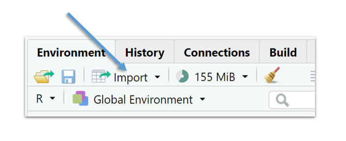
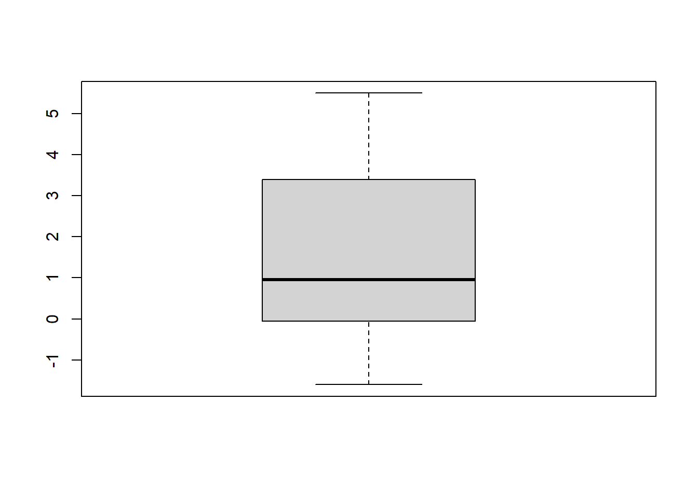
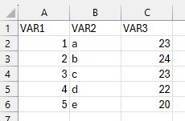
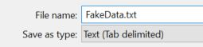

When you collect data by means of an experiment or via observational research, you need to apply the correct dataformat to your data.
I won’t go into detail about the different dataformats here, but in all likelihood you will shape your data in some kind of spreadsheet format with rows and columns, in which each column represents a variable and with the first row (header) indicating the names of your variables, as in Table 2.1:
Table 2.1: An abstract dataset with rows and columns
Variable
Variable
Variable
measurement
measurement
measurement
measurement
measurement
measurement
measurement
measurement
measurement
In R, this kind of object has its own data structure called a “dataframe”. Basically, you “tell” R that the combination of rows and column is one dataset or dataframe.
To introduce the concept of a dataframe, we will first construct two dataframes by combining vectors of the same type and length into a single dataframe.
After we have created dataframes in R, we will open an external dataset, which is what you will mostly do. Rarely is a dataframe directly created, except for pedagogical purposes perhaps or to simulate some data or a model.
Typically, a researcher prepares a dataset in some kind of spreadsheet software like MS Excel or some other specialized software before importing it into R.
2.1 How to make a dataframe in R: example 1
Table 2.2 represents a simple dataset based on a Lexical Decision Task of 6 rows. In a lexical decision task participants have to decide whether a string of characters is an existing word or a not.
Table 2.2: A dataset based on a Lexical Decision Task
Participant
Item
Frequency
ReactionTime
1
a
high
320
2
b
low
380
3
c
low
400
4
d
high
300
5
e
high
356
6
f
low
319
Table 2.3 explains the variables in a codebook (aka codesheet). A codebook documents and explains the variables in the dataset. Every row now represents a single variable. It’s good practice to document your data and R-code so that other researchers (including the future you) can interpret the data.
Table 2.3: Codebook for the dataset based on a lexical decision task
ID
Variable
Description
1
Participant
a unique identification number for each participant
2
Item
the word used as a stimulus
3
Frequency
the frequency of the item, a binary categorical variable: “high” vs. “low”
4
Reaction Time
the reaction time (in ms) of the participant to the item
Let’s create a dataframe for the dataset in Table 2.2. We start by creating every variable (or column) as a separate vector. It doesn’t matter that you write each vector as a row rather than as a column.
First we create every variable as separate vectors
2
the vectors are transformed into a dataframe data structure with data.frame()
3
print/look at the dataframe.
Participant Item Freq RT
1 1 a high 320
2 2 b low 380
3 3 c low 400
4 4 d high 300
5 5 e high 356
6 6 f low 319
2.2 How to make a dataframe in R: example 2
We now simulate an artificial dataset to compare scores (out of 20) between two groups: one group that received a treatment, referred to as “Treat,” and a control group referred to as “Control.” The term “treatment” has a very general interpetation in research methodology and is not limited to a medical intervention. For instance, in the context of educational research, a treatment might involve following a new teaching method. The dataset is structured as in Table 2.4:
Table 2.4: A fake dataset with an identifier variable, a categorical variable Group, with two levels (control vs. treat) and a continuous variable Score. The dataset contains three columns/variables and 61 rows - 1 header row with the variable names and 60 rows with the data.
ID
Group
Score
1
control
14
2
control
15
…
…
…
59
treat
12
60
treat
17
We can simulate this artificial dataset as follows:
1Group <-gl(n =2,2k =30,3labels =c("control", "treat"))4Score <-c(round(rnorm(n =30, mean =16, sd =0.8),0),round(rnorm(n =30, mean =12, sd =0.9),0))5df <-data.frame(Group, Score)6head(df)
1
Group is a two-level factor variable, (“gl” = “generate levels”)
2
with 30 observations for each level,
3
which we label “control” and “treat”,
4
we create a numeric vector Score based on two samples of 30 observations from two normal distributions. The observations are rounded,
5
combine the vectors into a dataframe structure,
6
and examine the first six rows.
Group Score
1 control 15
2 control 16
3 control 17
4 control 16
5 control 15
6 control 16
You can look at the full dataset in a separate window via View().
View(df)
You can edit the dataframe in a spreadsheetlike manner via edit():
edit(df)
You can actually create a dataframe from scratch with:
df_2 <-edit(data.frame())
2.3 R datasets
Base-R and other packages have built-in datasets.
Simply writing the name and running the code opens the sleep dataset:
extra is a numeric variable (a number with decimal places). group and ID are factors, categorical variables with 2 and 10 possible values, respectively. The output for the factor variables can be interpreted as follows:
$ group: Factor w/ 2 levels "1", "2": 1 1 1 ...
“1” and “2” are the names of the levels, which R converts into numerical values, 1 and 2.
Thus, 1 1 1 in the output above indicates that the first three values of the variable are “1”. The levels are arranged alphabetically by R, unless specified otherwise.
Which datasets are included in base-r?
data()
For more information on the dataset sleep use:
help("sleep")
2.4 Opening a Text File as a Dataframe
As mentioned already, it is very uncommon to create a dataset directly in R. Researchers typically use a spreadsheet application such as MS Excel to prepare the data first. For very large datasets, a relational database might be used. Sometimes researchers us specialized software, such as PRAAT or ELAN for specific types of data. After data collection, cleaning, and annotation, the data is typically saved as a text file (.csv or .txt file).
In a .txt file, tabs are used as delimiters, whereas for a .csv file, a comma (“,”) or semicolon (;) is used as delimiters (a delimiter is a symbol that indicates the separation between columns).
By way of example we open a .csv-file from De latte (2023). The file is published in the online repository TROLLing (https://dataverse.no/dataverse/trolling/). Here is the dataset abstract.
This dataset contains one datafile (.csv) used to create the graphs and tables in the paper “(Im)polite uses of vocatives in present-day Madrilenian Spanish”. It includes 534 Spanish vocative tokens, i.e. (pro)nominal terms of direct address (e.g., tío ‘dude’), which were retrieved from CORMA, a conversational corpus of peninsular Spanish compiled between 2016 and 2019. The data is annotated for (i) form, (ii) communication, (iii) semantic category, (iv) speaker’s generation, (v) speaker’s gender, (vi) relationship between speaker and hearer, (vii) socio-pragmatic character of the hosting speech act, (viii) the hearer’s reaction, and (ix) the vocative’s socio-pragmatic effect.
Before you can import the data in R, you need to download the data first and store the data file in a folder/directory (you might want to create a new folder first - and remember the name and the location of this folder!).
Then you assign this folder as your “working directory”, which is the directory or folder where you keep all the files related to a particular project.
Your current working directory can be found via getwd(). You change your working directory with setwd().
When your R-script and data file have been stored in the same folder which has been set as the working directory, you can use the read.csv() function to open the .csv-file, as follows:
The name of the data file (note the quotation marks),
2
“;” is the delimiter (the symbols that distinguishes the columns),
3
strings are interpreted as factors.
Actually, there are different ways to import a data file in R.
My favourite way - and arguably the easiest one - is by means of the Import dataset function in the Environment tab in RStudio, shown in Figure 2.1:

Figure 2.1: Import in RStudio
After you imported the dataset in R, go the the History tab and copy-paste the R-function that was automatically created when you imported the data through the RStudio dialogue to your R-scipt or notebook.
TipImport Data
Put your data and R-script/Notebook in the same folder. Use Import Dataset and copy the R-function from History to your R-script/Notebook.
2.5 Exploring a dataframe
There are several basic functions that I always use to explore a new dataset. First, I like to explore the different variables by means of str(), which offers basic overview of the data structure(s)
Or, I start by having a look at the names of the variables:
names(sleep)
[1] "extra" "group" "ID"
How many rows and columns are there?
dim(sleep)
[1] 20 3
Every data analysis should start with a univariate summary of all variables.
A handy function is summary().
summary(sleep)
extra group ID
Min. :-1.600 1:10 1 :2
1st Qu.:-0.025 2:10 2 :2
Median : 0.950 3 :2
Mean : 1.540 4 :2
3rd Qu.: 3.400 5 :2
Max. : 5.500 6 :2
(Other):8
I also like to eyeball the first and last rows of the dataset.
The first six rows of the dataset:
And the last six rows:
Other descriptive functions can be found in specific packages.
Here’s the describe() from the Hmisc package (Harrell Jr 2023).
library(Hmisc)describe(sleep)
sleep
3 Variables 20 Observations
--------------------------------------------------------------------------------
extra
n missing distinct Info Mean pMedian Gmd .05
20 0 17 0.998 1.54 1.5 2.332 -1.220
.10 .25 .50 .75 .90 .95
-0.300 -0.025 0.950 3.400 4.420 4.645
Value -1.6 -1.2 -0.2 -0.1 0.0 0.1 0.7 0.8 1.1 1.6 1.9 2.0 3.4
Frequency 1 1 1 2 1 1 1 2 1 1 1 1 2
Proportion 0.05 0.05 0.05 0.10 0.05 0.05 0.05 0.10 0.05 0.05 0.05 0.05 0.10
Value 3.7 4.4 4.6 5.5
Frequency 1 1 1 1
Proportion 0.05 0.05 0.05 0.05
--------------------------------------------------------------------------------
group
n missing distinct
20 0 2
Value 1 2
Frequency 10 10
Proportion 0.5 0.5
--------------------------------------------------------------------------------
ID
n missing distinct
20 0 10
Value 1 2 3 4 5 6 7 8 9 10
Frequency 2 2 2 2 2 2 2 2 2 2
Proportion 0.1 0.1 0.1 0.1 0.1 0.1 0.1 0.1 0.1 0.1
--------------------------------------------------------------------------------
2.6 Applying functions to a variable from a dataframe
Let’s tabulate the variable group from sleep.
table(sleep$group)
1 2
10 10
All the functions outlined earlier can be applied to variables of a dataframe. For instance, here’s some code to create a boxplot of the variabele extra as in Figure 2.2.
boxplot(sleep$extra)
Figure 2.2: A boxplot of the variable extra from sleep.
Note
To avoid the use of “DATAFRAME$”, you can use the attach() function. And when you’re done you use the detach() function. It simplifies the code, but if you work with multiple dataframes, you run the risk of loosing track of what you attached.
attach(sleep)boxplot(extra)

detach(sleep)
2.7 Selecting/subsetting data from a dataframe
The index function with the square brackets also works on dataframes. Dataframes have rows and columns and so the index function involves two dimensions.
We extract the first four rows from sleep.
sleep[1:4,]
extra group ID
1 0.7 1 1
2 -1.6 1 2
3 -0.2 1 3
4 -1.2 1 4
We extract all rows for which there is a positive extra amount of sleep.
Notice the dollar sign “$”. With the dollar sign a variable is selected from a dataframe.
What is the average amount of extra sleep?
mean(sleep$extra, na.rm=TRUE)
[1] 1.54
Another way to select data is via de subset() function. Here we create a new dataframe sleep_drug1 by selecting the control group from the sleep dataset.
Note that if you do not use the dollar sign, you create a new vector without adding it as a variable to the sleep dataset.
2.9 tapply()
This is a convenient function to compare different groups in your data. For instance, here we calculate the average extra time of sleep for both groups.
Create a new folder in your basic “Documents” folder. Give this folder a simple name and remember the location of this new folder.
Open a new R-script and set the new folder as your working directory
Create a small mock-dataset in Excel with three variables and five rows, as in Figure 2.3:

Figure 2.3: FakeData as a test dataset in MS Excel
Save the file as a .txt-file (FakeData.txt, cf. Figure 2.4) in the working directory.

Figure 2.4: Save the Excel file as a tab-delimited text file
Open the dataset in R with read.delim().
What are the names of the variables?
Give a univariate summary of every variable.
Exercise 2.2
Open the multitask dataset, which we created in Activity 1, and give the dataframe the name “multi”.
Give a univariate summary of all variables.
Use tapply() to calculate the median Time for both Tasks.
Take a subset of the simultaneous task.
Visualize this subset by means of a histogram.
Create a new variable Time_c by subtracting every observation for the Variable Time from its mean. (this is called centering the data, hence the use of “_c”).
Exercise 2.3
Download & Open Listening_to_Accents_Comprehensibility_Accentedness.csv. Give the dataframe the name “comp”.
Visualise Comprehensibility by means of a barplot and a histogram.
How many observations are there for every Accent?
Visualize Accent with a piechart. (check help("pie")).
Create a new Variable in which you bin the Accent levels into two or three groups.
De Latte, Fien. 2023. “Replication Data for: (Im)polite Uses of Vocatives in Present-Day Madrilenian Spanish.” DataverseNO. https://doi.org/10.18710/FOBMUQ.